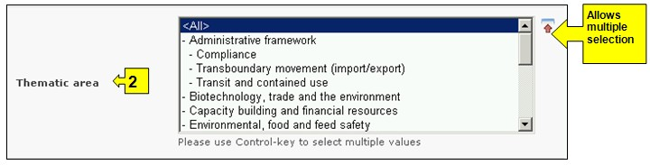
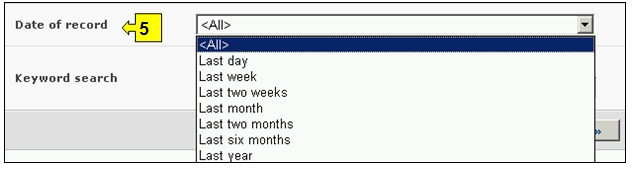
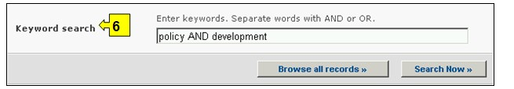
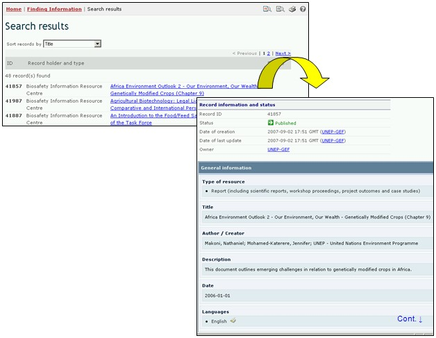

Ссылка: http://bch.cbd.int/database/resources/
Механизм посредничества по биобезопасности учрежден в соответствии со Статьей 20 Картахенского протокола для содействия обмену информацией и опытом в отношении ЖИО и оказания содействия Сторонам в осуществлении Протокола. В целях выполнения этих функций базы данных МПБ содержат информацию, связанную с биобезопасностью и осуществлением Протокола, представленную Сторонами, правительствами и иными организациями.
Центр информационных ресурсов по биобезопасности (ЦИРБ) содержит электронные каталоги публикаций в сфере биобезопасности и иных информационных ресурсов, предназначенных для государственных служащих, преподавателей, исследователей и общественности. Предоставлять информацию в ЦИРБ могут любые зарегистрированные пользователи МПБ.
Поиск информации в ЦИРБ можно осуществлять, используя соответствующие ссылки в выпадающем меню раздела навигационной панели Finding Information (Поиск информации), или в меню в левой части страницы Поиск информации, или используя ссылку Центр информационных ресурсов по биобезопасности в тексте страницы.

Рисунок 82
Эти ссылки дают возможность доступа к следующим электронным каталогам публикаций по биобезопасности и информационным ресурсам:
1) графические материалы,
2) руководства по оценке риска и управлению рисками,
3) службы новостей (включая рассылки по электронной почте),
4) публикации (монографии и др.),
5) отчеты,
6) периодические издания,
7) учебные материалы (включая учебники, учебные пособия и презентации),
8) веб-сайты, Интернет-справочники и поисковые системы.
На странице Поиска в Центре информационных ресурсов по биобезопасности предусмотрены шесть полей с критериями уточнения поиска. Каждое из полей содержит выпадающее меню, позволяющее выбрать необходимый критерий. По умолчанию (если критерий не выбран) используется первый пункт меню. Справа от полей выбора критериев расположены кнопки, позволяющие перейти в режим выбора нескольких критериев. В этом режиме возможно добавление критериев поиска, путем выбора необходимых критериев при удерживании нажатой кнопки Ctrl (Control) на клавиатуре.

Рисунок 83
Меню поля 1 [Год публикации] содержит возможности уточнения даты публикации, что позволяет выбрать для поиска: (1) конкретный год публикации, указав только нужный год в поле «год публикации», или (2) выбрать период публикации, указав «ранее чем» или «позднее чем» в поле «период» и соответствующий год в поле «год публикации».

Рисунок 84
Меню поля 2 [Тематическая область] содержит список основных тематических областей публикаций ЦИРБ, что позволяет сузить круг поиска до одной или нескольких необходимых тематик.

Рисунок 85
Меню поля 3 [Тип информационного источника] содержит список основных типов информационных ресурсов ЦИРБ, что позволяет сузить круг поиска до одного или нескольких необходимых типов информационных источников.

Рисунок 86
Меню поля 4 [Язык] позволяет сузить круг поиска до информационных источников на одном или нескольких указанных языках.

Рисунок 87
Меню поля 5 [Дата предоставления сведений] позволяет сузить круг поиска сведений в соответствии с датой их предоставления МПБ. Выпадающее меню содержит ряд временных периодов для оптимизации поиска сведений, предоставленных за определенное время (например, за последний день, за последний месяц, за последний год и т.д.).

Рисунок 88
Поле 6 [Ключевые слова] предоставляет возможность использования ключевых слов для сужения круга поиска. Пользователь может использовать стандартный синтаксис (AND/OR) для комбинации ключевых слов или корневых частей слов (например, «Import OR Export», «координ* AND центр»). В результате поиска с использованием ключевых слов будут представлены только сведения, содержащие конкретные ключевые слова, но не их синонимы (например, в результате поиска с использованием ключевого слова «Maize» будут представлены сведения, содержащие только это слово, и не представлены, содержащие его синонимы «Corn» и «Zea mays»)

Рисунок 89
На странице поиска расположены три кнопки, инициирующие процедуру поиска. Кнопки Search Now (Искать), расположенные вверху и внизу формы поиска, позволяют осуществить поиск, используя выбранные критерии в полях функции поиска. Результаты поиска будут расположены в алфавитном порядке по названию страны (по умолчанию). Кнопка Browse all records (Просмотреть все записи) дает возможность просмотреть все сведения этой базы данных.

Рисунок 90
Страницы Результатов поиска имеют функцию сортировки, расположенную вверху страницы, которая может быть использована для сортировки результатов в соответствии с параметрами, имеющими отношение к данной категории информации. Необходимо отметить, что параметры сортировки результатов изменяются в зависимости от критериев поиска.

Рисунок 91
Пример. Предположим, что необходимо найти недавно написанные статьи по вопросам ответственности. Для этого необходимо выбрать позднее чем в поле период и 2006 в поле год публикации и Ответственность и возмещение в поле Тематическая область. После нажатия кнопки Search Now (Искать) будут представлены результаты поиска в алфавитном порядке по названию публикации. Подробную информацию о каждой публикации можно просмотреть, используя ссылку в ее названии.

Рисунок 92

Рисунок 93